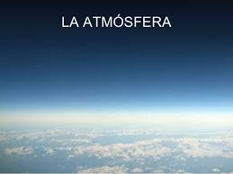
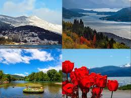
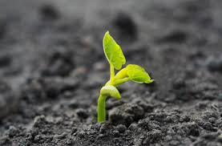

- Atmosfera
Factor clave para sostener el ecosistema planetario. La delgada capa de gases que envuelve a la Tierra se mantiene en su lugar por la gravedad del planeta. El aire consta de 78% de nitrógeno, 21% de oxígeno, 1% de argón y otros gases inertes, como el dióxido de carbono. Muchas sustancias naturales pueden estar presentes en pequeñas cantidades en una muestra de aire sin filtrar, incluyendo polvo, polen y esporas, rocío marino, cenizas volcánicas y meteoroides. Varios industriales contaminantes también pueden estar presentes, tales como cloro (primaria o en los compuestos), flúor compuestos, elemental mercurio y azufre compuestos tales como dióxido de azufre [SO2].
La capa de ozono de la atmósfera de la Tierra juega un papel importante en el agotamiento de la cantidad de radiación ultravioleta (UV) que llega a la superficie. Como el ADN se daña fácilmente con la luz UV, esto sirve para proteger la vida en la superficie. La atmósfera también retiene el calor durante la noche, lo que reduce las temperaturas diarias extremas.

- Clima
El clima, por otro lado, es la condición actual de temperatura, humedad, presión atmosférica, viento, lluvia, conteo de partículas atmosféricas y otros elementos meteorológicos durante períodos de hasta dos semanas.
Los climas se pueden clasificar de acuerdo con el promedio y los rangos típicos de diferentes variables, generalmente temperatura y precipitación. El esquema de clasificación más utilizado es el desarrollado originalmente por Wladimir Köppen.

- Vida
Aunque no existe un acuerdo universal sobre la definición de vida, los científicos generalmente aceptan que la manifestación biológica de la vida se caracteriza por la organización, el metabolismo, el crecimiento, la adaptación, la respuesta a los estímulos y la reproducción. En biología, la ciencia de los organismos vivos, la "vida" es la condición que distingue a los organismos activos de la materia inorgánica, incluida la capacidad de crecimiento, la actividad funcional y el cambio continuo que precede a la muerte.
Se puede encontrar una variedad diversa de organismos vivos (formas de vida) en la biosfera en la Tierra, y las propiedades comunes a estos organismos ( plantas, animales, hongos, protistas, arqueas y bacterias) son una forma celular basada en carbono y agua con Organización compleja e información genética hereditaria. Los organismos vivos sufren metabolismo, mantienen la homeostasis, poseen la capacidad de crecer, responden a estímulos, se reproducen y, a través de la selección natural, se adaptan a su entorno en generaciones sucesivas. Los organismos vivos más complejos pueden comunicarse a través de diversos medios.



 4
4 6
6 9
9 1
1 4
4